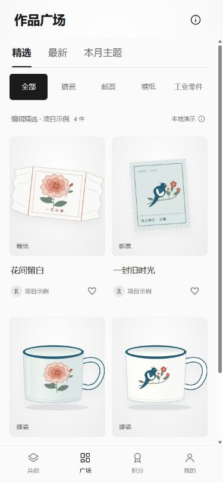
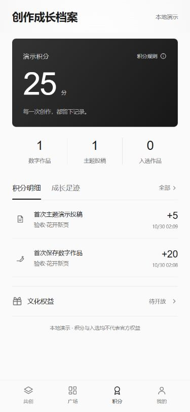
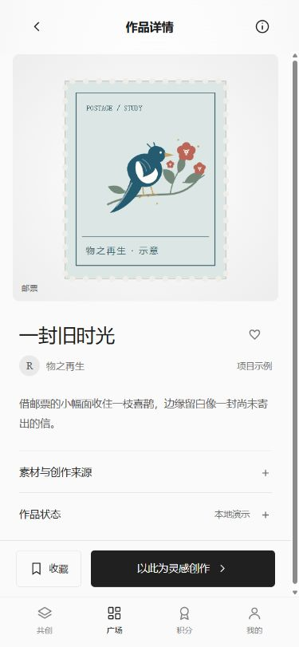

历史记录：以下验收与截图仅属于 v14，不能作为当前第 01 轮三底栏版本的验收。查看第 01 轮工程底座报告。
2026-10-30｜只修改、构建和验收本地版本，未提交或上传 GitHub。后续默认本地迭代，发布另行明确要求。
| 项目 | 结果 |
|---|---|
| 自动测试 | 39 / 39 通过，含迁移、计分去重、发布确认、快照隔离、写入失败、系列浏览和新增路由兼容。 |
| 代码与构建 | 13 个脚本语法、4 份 CSS、资源引用检查通过；单文件已构建，浏览器验证四项底栏、4 个精选示例、0 个外部脚本。 |
| 保存与计分 | 已有档案：25 → 首次保存 45 → 重复保存仍 45。独立空白档案：首次保存 20，编辑后重复保存再投稿后 25，只有 2 条流水，0 件入选。 |
| 来源与完整记录 | 来源详情显示原作品、规则及事件标识。成长页近期 3 条，“全部”实际显示 10 条。未删除完整历史来缩短页面。 |
| 广场和返回 | 精选/最新/主题与类别组合生效，空状态可恢复全部。详情返回前后 scrollTop 均为 958.666687 px；类别及排序保留。 |
| 私有与独立创作 | 灵感创作进入独立草稿，编辑页刷新后可继续保存；原“花开的邮程”示例仍在，保存的私有验收作品在最新广场中出现次数为 0。 |
| 点赞收藏 | “花开的邮程”点赞、收藏后刷新，二者 aria-pressed 均为 true；广场仍为当前底栏。 |
| 手机布局 | 320×640、375×812、390×844、430×932 下共创首页不纵向滚动，广场双列且无横向溢出，四项导航可见。小高度的积分页允许自然滚动。 |
| 错误日志 | 本轮浏览器控制台 JavaScript 错误 0。 |



prototype/archive-views.js（页面与底栏）、archive.css（继承中性配色和布局）、app.js（独立路由与记录入口）、community.js（示例创作说明及策展）、tests/coordinator.test.cjs（路由回归）、package.json / package-lock.json（版本）、README.md、使用说明.txt、预览和两份生成 HTML。
Dribbble：作品图、标题、作者与轻量互动层级；Are.na：收藏、来源与再创作连接；Android 导航规范：同级底栏。只借鉴结构，不使用外部作品素材，不套用参考站配色。
仍为本地演示。账号、云存储、真实多人共享、正式公开、版权核验、馆方审核、官方积分权益与实体量产均未接入。真实奖励、现金激励、授权范围、馆方评审及工艺规则仍待人工确认。未在实体手机 Safari 或微信内实测。
前端与后端边界见 数据接口说明。原型为阶段性草案，可继续调整。